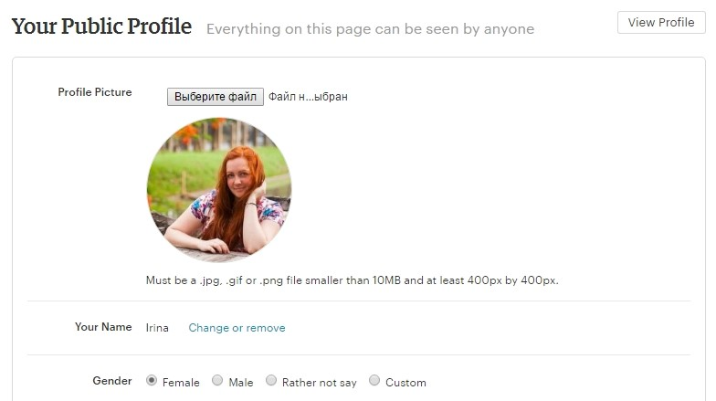
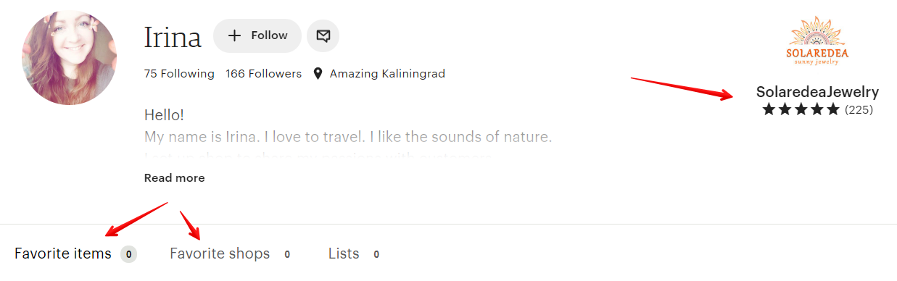
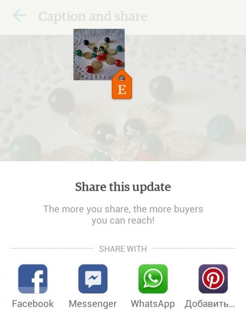
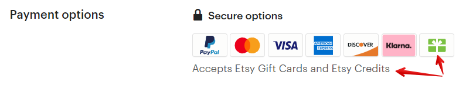
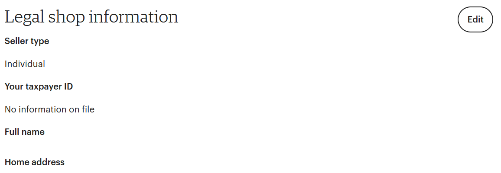
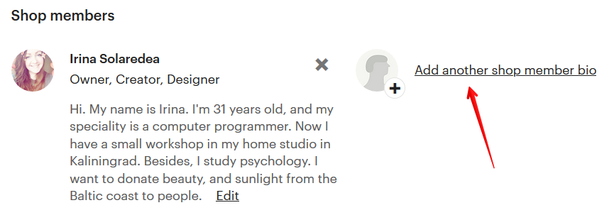

Как создать автоответчик для сообщений покупателей
В магазине можно настроить автоматическое сообщение, которое посетители
получат в ответ на своё новое сообщение вам. Удобно использовать эту
настройку в ночное время или в период, когда вы находитесь в поездке и не
можете быть на связи.
Для этого перейдите в раздел Messages и нажмите кнопку Auto-reply в правом
верхнем углу.
В открывшемся окне вы можете:
• включить (On) и выключить (Off) автоответчик
• написать текст сообщения, которое получит потенциальный покупатель
• указать в часах, как долго будет работать автоответчик
Автоответчик можно включить максимум на 5 дней.


Как заполнить личный профиль
Личный профиль – это почти тоже самое, что и раздел About, но только лично
о вас. Чтобы сразу понять, о чем идет речь, перейдем в меню You – View profile
– Edit profile.
В этом разделе вы можете изменить ваш аватар, имя, местоположение, дату
рождения и личную историю.
Здесь же вы можете включить или отключить возможность отображения разде-
лов Shop, Favorite items, Favorite shops, Treasury lists, Teams на странице профиля,
поставив или убрав галки.
Также вы можете прописать любимые материалы, которые используете в со-
здании ваших товаров.


Все эти разделы имеют активные ссылки. Именно поэтому, как вы видите, они
у меня не заполнены. Я сделала это умышленно, чтобы исключить ситуацию,
когда покупатель заходит в мой личный профиль, переходит в какой-то из раз-
делов и затем покидает мой магазин, т.к. увлёкся моими избранными товарами
или избранными магазинами.
Вот так отображается профиль, в котором есть только одна активная ссылка –
на собственный магазин (справа).
А вот так выглядит магазин, в котором все ссылки активны.
Как использовать Shop Updates
В данном разделе можно публиковать записи пользуясь специальным прило-
жением для мобильных устройств. Скачать его можно здесь:


Android https://play.google.com/store/apps/details?id=com.etsy.android.soe
iOS https://itunes.apple.com/us/app/sell-on-etsy/id860815329?mt=8
После того, как вы установили приложение, авторизуйтесь и выберите пункт
More – Marketing – Social Media – Shop Updates.
Нажмите на значок фотоаппарата в правом верхнем углу.
Затем сделайте фото или загрузите существующее.
Теперь кликните на сфотографированный товар и привяжите к нему любой ак-
тивный листинг в вашем магазине (листинг должен быть добавлен заранее).


Затем разместите на картинке оранжевый ярлык, чтобы было понятно, что
именно вы рекламируете.
А после добавьте описание. Нажмите Done, а затем Share on Etsy.
После этого вы можете опубликовать новость в любой социальной сети, прило-
жение которой установлено на вашем мобильном устройстве.
Если вы хотите удалить какое-то обновление, вам нужно кликнуть на него в ва-
шем телефоне и выбрать Delete.
После этого на всякий случай проверьте, было ли оно удалено.


Что такое Etsy gift card
Подарочные карты, или Etsy Gift Cards — это подарочные сертификаты, которые
можно приобрести вместо конкретного товара. А человек уже сам решает, на
что ему потратить этот сертификат среди всех тех магазинов, которые прини-
мают эту услугу.
К сожалению, принимать подарочные карты могут только магазины, у которых
подключена система приема платежей Etsy Payments. Те магазины, которые
принимают подарочные карты, имеют в своих Policies вот такой значок:
Подарочную карту можно приобрести только в пяти валютах: евро, фунты стер-
лингов, американские, канадские или австралийские доллары.
Для того, чтобы приобрести карту, нужно перейти по ссылке
https://www.etsy.com/giftcards и в соответствующих графах ввести нужные дан-
ные получателя.
Подарочные сертификаты бывают только 4-х номиналов, например, $25, $50,
$100 и $250.

Если покупатель приобрел товар, стоимость которого ниже, чем номинал пода-
рочной карты, то остаток баланса будет находиться на карте для будущих по-
купок. Если же стоимость товара выше — то разницу в цене нужно доплатить
самостоятельно (при помощи Etsy Payments).
Подарочной картой нельзя оплачивать счета/комиссии Etsy, приобрести за её
счет другую подарочную карту или совершить покупку в магазине, который не
принимает к расчету Etsy Gift cards.
Что такое Taxpayer ID в настройках магазина
В феврале 2017 года у российских продавцов (а с марта 2018 также у беларус-
ких) в настройках магазина появилась настройка VAT ID (Finances – Legal and
tax information).
Это аналог ИНН (индивидуальный номер налогоплательщика). Раньше его тре-
бовалось указывать только жителям Евросоюза.
Суть в том, что если вы работаете как юридическое лицо и отчисляете в нало-
говую службу НДС (налог на добавленную стоимость), то здесь необходимо ука-
зать свой ИНН.
Если же вы не отчисляете этот налог (или же не имеете юридической регистра-
ции), то Etsy взымают НДС с комиссий, которые вы им платите, и сами перечис-
ляют его в налоговую службу вашей страны.
Для России и Беларуси НДС составляет 20%.
Что это означает на деле. Если вы платите 20 центов за размещение листинга,
то дополнительно должны заплатить ещё 4 цента НДС (20% от 20 центов). Если


комиссия с продажи товара составила 1 доллар, то дополнительно нужно пере-
числить Этси ещё 20 центов (20% от 1 доллара).
С 2019 года НДС-налог для россиян взымается вне зависимости от того, указан
ИНН на Etsy или нет.
Можно ли привязать магазин к другому PayPal-аккаунту
Да, это можно сделать в настройках магазина Finances – Payment Settings – Pay-
ment methods.
Как указать, что в магазине есть сотрудники/помощники
Если у вас есть сотрудники или партнёры, которые помогают с магазином, то их
необходимо добавить как членов команды.
Для этого перейдите на главную страницу магазина и нажмите кнопку Edit shop.
После этого прокрутите страницу до пункта Shop Members.


Чтобы добавить нового члена команды, нажмите кнопку Add another shop
member bio.
После этого в открывшемся окне загрузите фотографию человека, укажите его
имя, роль в магазине, текстовое описание.
Какие роли могут быть у членов команды
Для своих партнёров/помощников вам необходимо указать роль, которую они
выполняют в магазине.
Etsy предлагает следующие варианты:
• Owner – владелец магазина. Он должен сам участвовать в процессе со-
здания товаров. Он отвечает за весь магазин.
• Assistant – помощник. Помогает с производством товаров или ведением
магазина.
• Curator – куратор выбирает товары, которые продаются в магазине. Эта
роль доступна для магазинов винтажа или материалов для рукоделия.
• Customer Service – человек, который помогает владельцу общаться с по-
купателями.
• Designer – дизайнер товаров. Ключевая роль для handmade-товаров.
• Maker – тот, кто физически создаёт товары.
• Marketer – маркетолог помогает рекламировать магазин.
• Photographer – фотограф.
• Shipper – человек, который помогает упаковывать и отправлять товары.
• Add Custom – если ничто из вышеперечисленного вам не подходит, то
придумайте роль самостоятельно.
В этом разделе можно не указывать фрилансеров, то есть людей, которые вы-
полняют какую-то работу от случая к случаю.
Например, если вы попросили знакомого фотографа сделать снимки ваших но-
вых товаров, то его не нужно указывать как члена команды. Но если это ваш
штатный фотограф, то добавьте его в раздел Shop members.
Может ли в магазине быть несколько владельцев (owner)
Технически нескольким членам команды можно назначить роль Owner.
На Etsy есть статья, в которой указано, что владельцев магазина может быть
несколько. Каждый должен быть продавцом и быть дизайнером или создателем
handmade-товаров.
Но вот как однажды прокомментировал этот вопрос один из админов Этси: «В
настоящий момент Etsy не разрешает совместное владение магазином. Это про-
тив правил площадки. Авторство и дизайн всех товаров в магазине должны при-
надлежать только одному человеку».